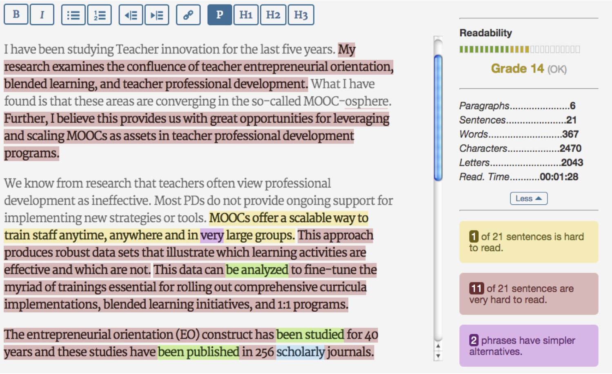

Ứng dụng của NLP
Tóm tắt văn bản tự động (Automatic summarization)
-
Tóm tắt văn bản tự động là quá trình tối giản một tài liệu văn bản bằng một chương trình máy tính để tạo ra một bản tóm tắt ngắn gọn chỉ chứa những điểm cốt lõi, quan trọng trong văn bản gốc. Ý tưởng chính của quá trình tự động tóm tắt là tìm ra một tập con đại diện cho tập dữ liệu, sao cho nó có chứa toàn bộ thông tin của tập dữ liệu. Ngày nay, công nghệ tóm tắt văn bản tự động đã được áp dụng trên diện rộng trong các lĩnh vực công nghiệp, mà một ví dụ tiêu biểu là trong các máy tìm kiếm như Google.
-
Có hai phương pháp chính để tiếp cận bài toán tóm tắt văn bản tự động là trích xuất (extraction) và tóm lược (abstraction). Phương pháp trích xuất hoạt động bằng cách chọn ra một tập con gồm những từ, cụm từ hoặc câu trong văn bản gốc để xây dựng nên bản tóm tắt. Ngược lại, phương pháp tóm lược đi tìm bản chất ngữ nghĩa của văn bản gốc, sau đó sử dụng công nghệ sinh ngôn ngữ tự nhiên để kết xuất nên bản tóm tắt.
Chấm điểm tự động (Automated essay scoring)
-
Chấm điểm tự động (Automated essay scoring - AES) là hành động sử dụng một chương trình máy tính được chuyên biệt hóa để tính điểm cho những bài luận (essay) được viết ra trong một môi trường giáo dục như trường Trung học hoặc Đại học.
-
AES là một ứng dụng của việc Xử lý ngôn ngữ tự nhiên (NLP) và là một phương pháp để tự động hóa quá trìnhthẩm định giáo dục (Educational assessment).

-
Cha đẻ của công nghệ AES là Ellis Batten Page. Năm 1966, ông đã lập luận chứng minh cho khả năng chấm điểm bài luận bằng máy tính. Hai năm sau, Page hoàn thành và công bố một chương trình tên là Project Essay Grade (PEG). Nhưng chỉ bằng những công nghệ thời đó, việc chấm điểm tự động kéo theo một chi phí lớn để hoạt động. Do đó ông nhanh chóng nản lòng và trì trệ công việc phát triển của mình suốt hai thập niên tiếp theo.
-
Nguyên lý hoạt động của các chương trình AES hiện nay có liên quan mật thiết đến lĩnh vực Học máy (Machine learning - ML): Bước đầu AES đọc vào một tập huấn luyện (training set - một khái niệm trong ML) chứa những bài luận mẫu đã được cho điểm sẵn (bởi con người), sau đó chương trình tiến hành khái quát hóa những đặc tính nổi bật của mỗi bài luận (như số lượng từ ngữ, số mệnh đề phụ thuộc, hoặc tỉ lệ giữa ký tự viết thường và viết hoa...) mà không cần sự chỉ dẫn của con người. Tiếp theo, chương trình AES xây dựng một model toán học để liên kết các đặc tính trên với điểm số mà bài luận đó nhận được. Và cuối cùng, nó sẽ áp dụng chính model đó để tính toán ra số điểm cho các bài luận mới.
Dịch tự động (Machine translation)
-
Dịch tự động (Machine translation - MT) là một bài toán trong lĩnh vực NLP, nghiên cứu việc dịch chính xác một văn bản hoặc một bài nói chuyện từ ngôn ngữ này sang một ngôn ngữ khác.
-
Ở mức độ sơ đẳng nhất, MT thực hiện việc thay thế từng từ trong văn bản cần dịch bởi từ đồng nghĩa tương ứng ở ngôn ngữ kia (word-by-word). Cách làm này rất đơn giản nhưng nó không bao giờ cho ta một bản dịch tốt được (bởi nó không nhận diện và dịch được các cụm từ (phrase) vốn xuất hiện rất nhiều trong mọi thể loại văn bản).
-
Những thành tựu nghiên cứu trong lĩnh vực NLP đã được áp dụng để cải thiện chất lượng cho lĩnh vực Machine translation. Một bước đi tiêu biểu là sử dụng kỹ thuật neural (neural technique), một hướng tiếp cận từ công nghệ Học sâu (Deep learning).

Phát hiện thư rác (Spam detection)
-
Thuật toán Naive Bayes: là một kĩ thuật thống kê phổ biến của bộ lọc email. Naive Bayes phân loại công việc bằng tương quan trong việc sử dụng các thẻ với spam hay non-spam emails rồi thì dùng định lí Bayes để tính toán xác suất xem có phải là một spam email hay không
Cái công thức đó ko biết biễu diễn = cái này.
-
Máy vecto hỗ trợ (support vector machine): Đây là một khái niệm trong thống kê và khoa học máy tính cho một tập hợp các phương pháp liên quan đến nhau để phân loại và phân tích hồi quy. Xét về tổng thể, các lỗi mô hình này ít hơn so với Naive Bayes, các kiểm tra lỗi cũng tốt hơn. Trong khi SVM làm tăng tính phức tạp của mô hình, kết quả cho thấy không có lợi so với thuật toán Bayes.
-
K-nearest neighbor: Trong phương pháp này, nhãn cho một mẫu thử nghiệm được dự đoán dựa trên đa số phiếu của k láng giềng gần nó nhất. Thuật toán K-NN là một trong những thuật toán học máy đơn giản nhất. Các thuật toán K-NN là phương pháp phi tham số được sử dụng để phân loại và hồi quy. Trong phân loại K-NN, đầu ra là một thành phần của lớp. Một đối tượng được phân loại bởi đa số phiếu của các láng giềng. Trong hồi quy, đầu ra là giá trị tài sản cho đối tượng. Giá trị này là trung bình của các giá trị của k láng giềng gần nhất của nó.
Nhận dạng giọng nói (Speech recognition)
-
Trước khi máy tính hiểu được những ngôn ngữ con người thì nó cần phải nghe được những gì ta nói trước đã. Điều này liên quan đến một quá trình phức tạp bao gồm lấy mẫu âm thanh, khai thác các tính năng và rồi thì nhận ra âm thanh cá nhân sau đó chuyển chúng thành văn bản.
-
Các nhà khoa học học đã phát triễn kĩ thuật khai thác các tính năng một cách tương tự như tai người và nhận ra chúng là các âm sắc và âm thanh như của con người. Điều này liên quan tới việc sử dụng các mạng thần kinh nhân tạo và là một phần trong lĩnh vực trí tuệ nhân tạo.
-
Mặc dù với những tiến bộ trên, việc nghe được giọng nói của bạn mới chỉ là một nửa của vấn đề. Một khi máy tính xử lí quá trình này, nó chỉ có thể sao chép lại những gì bạn nói. Bước tiếp theo chính là xử lí ngôn ngữ tự nhiên, khi máy tính đã chuyển những gì bạn nói thành văn bản, nó sẽ thật sự hiểu những gì bạn nói. Đây được xem là khó khăn hơn so với quá trình nhận dạng giọng nói bởi vì ngôn ngữ con người đầy bối cảnh và ngữ nghĩa làm cho quá trình xử lí khó khăn hơn.
-
Ứng dụng trong gia đình và văn phòng: Ứng dụng bao gồm nhận dạng cá nhân để truy cập vài các tòa nhà, máy tính và điều khiển bằng giọng nói của các hệ thống máy tính như cơ sở dữ liệu.
- Ứng dụng trong quân sự:Công nghệ này rất hữu ích cho việc kiểm soát “rảnh tay” các hệ thống vũ khí.
-
Ngoài ra, trong Ô-tô, các công cụ Speech recognition kiểm soát được các hệ thống ngoại vi như điện thoại và hệ thống âm nhạc, điều khiển bằng giọng nói của thiết bị trợ giúp định hướng